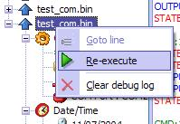

| 6.
Présentation générale des menus |
Ce chapitre explique brièvement
le menu principal de DC-TOOL GUI, en complément avec les aides en barre
des tâches.
1) Menu principal
Fichier :
- Envoyer
fichier : Cette commande est la principale
de DC-TOOL GUI. Elle permet l'envoi d'executables sur la console afin de les
tester.
- Recevoir
fichier : Cette
commande permet de copier des zones mémoire de la Dreamcast et de les
écrire dans un fichier avec la taille spécifiée.
- Copier le BIOS :
Cette
commande permet de copier le bios de votre Dreamcast sur votre disque dur.
Il est composé de deux fichiers : dc_bios.bin et dc_flash.bin. Il peut
être utilisé dans Chankast. Mais attention
: Vous avez le devoir moral de ne pas le destribuer.
- Copier le GD :
Cette
commande permet de ripper le GD-ROM original inséré dans votre
Dreamcast. (DESACTIVE : Merci de ne pas me le
re-demander).
- Copier le VMU :
Cette
commande permet de copier les VMU insérés dans vos manettes.
(DESACTIVE : Merci de ne pas me le re-demander).
- Tester la liaison
: Ceci
permet de tester l'état de la liasion de votre Dreamcast et votre PC.
- Effacer la FLASH:
Cette
commande permet d'effacer la mémoire FLASH de votre Dreamcast. Elle
sera comme neuve : Comme à la sortie d'usine. La mémoire FLASH
contient la date, l'heure, la sélection de la langue et d'autres infos
(les infos ISP pour Internet, c'est à dire l'addresse mail de DreamArena...).
Ceci n'affecte en aucun cas autre chose (les VMU par exemple).
- Ré-initialiser
: Cet
élément permet de ré-initialiser DC-TOOL GUI ainsi que
DC-LOAD. Si votre DC-TOOL GUI plante, essayez cette commande.
- Annuler l'opération
: Grâce
à cela, vous pouvez annuler l'opération d'upload/download en
cours. Mais attention : Ceci n'est pas recommandé, car vous devrez
redémarrer votre Dreamcast avec le CD DC-LOAD correspondant à
votre mode de connexion. Ceci car DC-LOAD ne supporte pas l'arrêt de
transfert. En revanche, DC-TOOL GUI n'a pas besoin de redémarrage.
- Quitter : Bon,
pas besoin de faire un dessin :)
Edition :
- Définir
l'adresse à : Cette commande permet
de sélectionner l'adresse de départ pour l'opération.
Pour une opération d'envoi, elle spécifie l'endroit ou le fichier
commencera à être envoyé. Pour une opération de
réception, elle spécifie l'endroit à partir duquel la
mémoire sera copiée.
- Définir
la taille : Permet
de définir la taille du fichier à recevoir, la longueur du fichier
qui sera téléchargé.
- Définir
le type de liaison : Cette
option permet de dire à DC-TOOL GUI quelle type de liaison sera utilisé,
donc le DC-TOOL à utiliser.
- Définir
le port COM :
Cette
commande permet de sélectionner le port COM ou est branché votre
cable série.
- Définir la
vitesse de transfert : Cette
commande permet de spécifier la vitesse du port série.
- Définir l'IP
de communication : Définir
l'adresse IP de communication pour votre adaptateur haut débit.
Debug :
- Copier
texte sélectionné : Ceci permet
de copier le texte sélectionné vers le presse-papier.
- Tout
sélectionner : Sélectionne
tout dans la vue de debug.
- Chercher
du texte
: Permet
de chercher une chaine dans le debug.
- Sauvegarder
log sous
:
Permet
de sauvegarder toutes les sorties du debug vers un fichier RTF ou TXT.
- Effacer debug log:
Permet
de TOUT effacer dans le debug log.
Filtres :
- Activer
les filtres : Les filtres permettent d'enlever
les lignes inutiles qui remplisse le debug log. Vous devez activer le mode
en sélectionnant cette option, mais vous devez également configurer
les filtres.
- Configurer
les filtres : Permet
d'ajouter toutes les lignes qui sont inutiles, et par extention de gérer
les filtres.
- Voir les
lignes filtrées : Voir
les entrées filtrées.
Options :
- Activer
le baudrate alterné à 115200 bauds : Si
vous avez un Coders Cable et que vous avez un problème de transmission
à 115200, vous pouvez essayer d'activer cette option. Peut-être
ca marchera mieux.
- Utiliser
le terminal Dumb : Active
un terminal Dumb (=inexistant ?) plutôt que le serveur de fichier de
la console. Je vous avoue que je ne sais pas a quoi sert cette option.
- Ne
pas lier la console et le serveur de fichier
: Permet
de ne pas attacher la console et le serveur de fichier. Bon, la aussi, je
ne sais pas a quoi peut bien servir cette option.
- Ne
pas effacer l'écran
avant le téléchargement :
En
revanche cette option est très claire. Elle permet d'eviter d'effacer
l'écran avant chaque téléchargement.
- Options avancées
: Grâce
aux options avancées vous pouvez faire un Chroot vers un dossier (utilité?)
et utiliser une image CDFS ISO (ca, c'est utile) afin d'émuler le lecteur
de GD de la console. Utile si vous develloppez un jeu qui utilise un plus
gros "romdisk".
Config :
- Assistant
de config : Lancer l'assistant de configuration
que vous avez au premier démarrage de DC-TOOL GUI.
- Emplacement
de DC-TOOL : Si
vous avez un nouveau DC-TOOL et que DC-TOOL GUI n'est pas encore sorti, ou
que vous avez un ancien DC-LOAD inferieur à v1.0.3, vous pouvez choisir
d'utiliser un autre DC-TOOL que celui integré à DC-TOOL GUI.
Vous devez également spécifier le type de DC-TOOL qu'il s'agit
(Serial, BBA).
- Configurer
les DLL de Cygwin
: Vous
pouvez configurer les DLL de Cygwin. Soit utiliser celle qui sont incluses
(vous n'avez pas de release Cygwin installée) soit vous voulez utiliser
votre Cygwin installé. Vous pouvez le faire à partir d'ici.
- Configurer
la détection du BIN
:
Permet
de configurer la DLL BINCHECK.DLL que j'avais faite pour SBI Builder. Grâce
à cette DLL vous pouvez savoir si un BIN est scramblé avant
de l'envoyer à la console. Si il l'est, il doit être unscramblé
avant. Vous pouvez configurer ce module ici. (Vous n'êtes pas obligé
de l'utiliser).
- Options diverses
: Quelques
options diverses de commodité...
- Historique
:
Permet
de gérer l'historique présent dans la boite de dialogue envoi
et récéption. Vous pouvez effacer des éléments,
nettoyer les éléments effacés depuis, ou bien d'autres
encore...
- Language : Volontairement
laissé en anglais (pour ceux qui se sont trompés...), cette
option permet de re-choisir la langue à utiliser dans DC-TOOL GUI.
Aide :
- Aide
principale : Permet d'afficher ce fichier
d'aide.
- Envoyer
un rapport de bugs : Me
contacter si y'a une remarque à faire.
- Site
web :
Permet d'accéder
aux sites de DC-TOOL, l'original de ADK/NAPALM, et le mien.
- A
propos
:
Permet
d'afficher une boîte de dialogue avec quelques informations... sympatique.
Ca vaut le coup d'oeil!
2) Menu sur
l'arbre
- Re-executer
: Permet
de re-executer un élément de l'arbre avec tous les paramètres
(de connexion, d'adresse, de taille de fichier...) immédiatement. Disponible
uniquement en cliquant sur le nom de fichier au sommet du noeud.

- Effacer
le debug log :
Permet d'effacer
TOUT le contenu du debug log.